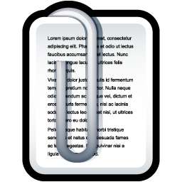
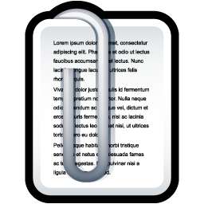

Nirav Ajmeri


 


Lecturer (Assistant Professor) in Artificial Intelligence
School of Computer Science
University of Bristol
Merchant Venturers Building, Woodland Road, Bristol, BS8 1UB
nirav.ajmeri@bristol.ac.uk
Updates
- Apr 2023: HotSoS 2023
- Feb 2023: Talk at Bath
- Sep 2022: Tutorial at Bristol Interactive AI Summer School (BIAS 2022)
- May 2022: COINE at AAMAS 2022
- Feb 2022: Tutorial at AAAI 2022
- Sep 2021: Tutorial at Bristol Interactive AI Summer School (BIAS 2021)
- May 2021: Tutorial at AAMAS 2021 on Ethics and Sociotechnial Systems
- Jul 2021: Tutorial at IJCAI 2020 on Ethics in Sociotechnical Systems
- Oct 2020: I am now a Lecturer in Artificial Intelligence at the University of Bristol
- Aug 2020: Tutorial at ACSOS 2020 on Ethics in Self-* Sociotechnical Systems
- May 2020: Best Blue Sky Paper award at AAMAS 2020
- May 2020: Tutorial at AAMAS 2020 on Ethics in Sociotechnical Systems
I am a Lecturer in Artificial Intelligence in the School of Computer Science at the University of Bristol (UoB). My research interests are in AI, socially intelligent agents, and multiagent systems with an emphasis on ethics, cybersecurity, and privacy.
I received a Ph.D. and an M.S. in Computer Science from North Carolina State University, and a B.E. in Computer Engineering from Sardar Vallabhbhai Patel Institute of Technology, Gujarat University. My doctoral dissertation was advised by Professor Munindar P. Singh.
Prior to joining Bristol, I was a Postdoctoral Research Scholar in Computer Science at North Carolina State University, supported by NSA Science of Security Lablet. I was advised by Professor Munindar P. Singh and Professor Laurie Williams. I worked in the Multiagent Systems and Social AI Lab and with the Realsearch Group.
In Fall 2017, I worked as research intern with the CTO research team of HERE Technologies. At HERE, I built location and trajectory privacy-preserving data publishing, query answering, and learning systems. From 2007 to 2012, I worked as a researcher in the Software Engineering Lab at Tata Research Development and Design Centre (TRDDC), India. At TRDDC, I worked on agile requirements engineering, social software and semantic web, and knowledge extraction, representation, reuse and reasoning. My research focused on making available domain knowledge (tacit as well as explicit) visible and accessible, so as to make it amenable for reconfiguration and reuse.
- 2023
- [W14] Kopo M Ramokapane, Lizzie Coles-Kemp, Nikhil Patnaik, Rui Huan, Nirav Ajmeri, Genevieve Liveley, and Awais Rashid. Towards Equitable Privacy. Proceedings of the Workshop on Inclusive Privacy and Security (WIPS) @ SOUPS, Aug 2023, pages 1--6.
- [W13] Daniel E. Collins, Conor J. Houghton, and Nirav Ajmeri. Social Value Orientation and Integral Emotions in Multi-Agent Systems. Proceedings of the International Workshop on Coordination, Organizations, Institutions, Norms, and Ethics for Governance of Multi-Agent Systems (COINE), London, May 2023, pages 1--21.
- [J14] Amanul Haque, Nirav Ajmeri, and Munindar P. Singh. Understanding Dynamics of Polarization via Multiagent Social Simulation. AI & Society: Journal of Knowledge, Culture and Communication, vol xx, 2023, pages 1--17. doi: 10.1007/s00146-022-01626-5.
- 2022
- [J13] Mehdi Mashayekhi, Nirav Ajmeri, George F. List, and Munindar P. Singh. Prosocial Norm Emergence in Multiagent Systems. ACM Transactions on Autonomous and Adaptive Systems (TAAS), vol 17, number 1--2, 2022, pages 3:1--3:24. doi: 10.1145/3540202.
- [C20] Rishabh Agrawal, Nirav Ajmeri, and Munindar P. Singh. Socially Intelligent Genetic Agents for the Emergence of Explicit Norms. Proceedings of the 31th International Joint Conference on Artificial Intelligence (IJCAI), Vienna, July 2022, pages 10--16.
- [C19] Pradeep K. Murukannaiah, Nirav Ajmeri and Munindar P. Singh. Enhancing Creativity as Innovation via Asynchronous Crowdwork. Proceedings of the 14th ACM Web Science Conference (WebSci), Barcelona, June 2022, pages 66--74.
- [J12] Veljko Dubljević, Sean Douglas, Jovan Milojevich, Nirav Ajmeri, William A. Bauer, George F. List, and Munindar P. Singh. Moral and Social Ramifications of Autonomous Vehicles: A Qualitative Study of the Perceptions of Professional Drivers. Behaviour & Information Technology, vol 41, number xx, May 2022, pages 1--15. In press.
- [C18] Jessica Woodgate and Nirav Ajmeri. Macro Ethics for Governing Equitable Sociotechnical Systems. Proceedings of the 21st International Conference on Autonomous Agents and Multiagent Systems (AAMAS), Blue Sky Idea Track, Auckland, May 2022, pages 1824--1828.
- [W12] Sz-Ting Tzeng, Nirav Ajmeri, and Munindar P. Singh. Fleur: Social Values Orientation for Robust Norm Emergence. Proceedings of the International Workshop on Coordination, Organizations, Institutions, Norms, and Ethics for Governance of Multi-Agent Systems (COINE), Auckland, May 2022, pages 185--200.
- [W11] Phillip Sloan and Nirav Ajmeri. Commitment-Based Negotiation Semantics. Proceedings of the 10th International Workshop on Engineering Multi-Agent Systems (EMAS), Auckland, May 2022, pages 1--20.
- [W10] Amanul Haque, Nirav Ajmeri, and Munindar P. Singh. Understanding Dynamics of Polarization via Multiagent Social Simulation. Proceedings of the 3rd International Workshop on Autonomous Agents for Social Good (AASG), Auckland, May 2022, pages 1--9.
- [J11] Rezvan Mahdavi-Hezaveh, Nirav Ajmeri, and Laurie Williams. Feature toggles as code: Heuristics and metrics for structuring feature toggles. Information and Software Technology (IST), vol 145, January 2022, article 106813, pages 1--14. doi: 10.1016/j.infsof.2021.106813.
- 2021
- [J10] Veljko Dubljević, George F. List, Jovan Milojevich, Nirav Ajmeri, William A. Bauer, Munindar P. Singh, Eleni Bardaka, Thomas A. Birkland, Charles H. W. Edwards, Roger C. Mayer, Ioan Muntean, Thomas M. Powers, Hesham A. Rakha, Vance A. Ricks, and M. Shoaib Samandar. Toward a Rational and Ethical Sociotechnical System of Autonomous Vehicles: A Novel Application of Multi-Criteria Decision Analysis. PLOS One, vol 16, number 8, August 2021, article e0256224, pages 1--17. doi: 10.1371/journal.pone.0256224.
- [W9] Sz-Ting Tzeng, Nirav Ajmeri, and Munindar P. Singh. Noe: Norm Emergence and Robustness Based on Emotions in Multiagent Systems. Proceedings of the International Workshop on Coordination, Organizations, Institutions, Norms, and Ethics for Governance of Multi-Agent Systems (COINE), London, May 2021, pages 62--77.
- 2020
- [C17] Nirav Ajmeri, Hui Guo, Pradeep K. Murukannaiah, and Munindar P. Singh. Elessar: Ethics in Norm-Aware Agents. Proceedings of the 19th International Conference on Autonomous Agents and Multiagent Systems (AAMAS), Auckland, May 2020, pages 16--24. Acceptance ratio: 23%.
- [C16] Pradeep K. Murukannaiah, Nirav Ajmeri, Catholijn Jonker, and Munindar P. Singh. New Foundations of Ethical Multiagent Systems. Proceedings of the 19th International Conference on Autonomous Agents and Multiagent Systems (AAMAS), Blue Sky Idea Track, Auckland, May 2020, pages 1706--1710. Best Blue Sky Paper Award.
- [J9] Özgur Kafalı, Nirav Ajmeri, and Munindar P. Singh. Desen: Specification of Sociotechnical Systems via Patterns of Regulation and Control. ACM Transactions on Software Engineering and Methodology (TOSEM), vol 29, number 1, January 2020, pages 7:1--7:50.
- 2019
- [C15] Anup K. Kalia, Nirav Ajmeri, Kevin S. Chan, Jin-Hee Cho, Sibel Adalı, and Munindar P. Singh. The Interplay of Emotions and Norms in Multiagent Systems. Proceedings of the 28th International Joint Conference on Artificial Intelligence (IJCAI), Macao, August 2019, pages 371--377. Acceptance ratio: 17.9%.
- [C14] Shubham Goyal, Nirav Ajmeri, and Munindar P. Singh. Applying Norms and Sanctions to Promote Cybersecurity Hygiene. Proceedings of the 18th International Conference on Autonomous Agents and Multiagent Systems (AAMAS), Montreal, May 2019, pages 1991--1993.
- 2018
- [C13] Venkatesh T. Dhinakaran, Raseshwari Pulle, Nirav Ajmeri, and Pradeep K. Murukannaiah. App review analysis via active learning: Reducing supervision effort without compromising classification accuracy. Proceedings of the 26th IEEE International Requirements Engineering Conference (RE), Banff, Canada, August 2018, pages 170--181. Acceptance ratio: 26.7%.
- [C12] Nirav Ajmeri, Hui Guo, Pradeep K. Murukannaiah, and Munindar P. Singh. Robust Norm Emergence by Revealing and Reasoning about Context: Socially Intelligent Agents for Enhancing Privacy. Proceedings of the 27th International Joint Conference on Artificial Intelligence (IJCAI), Stockholm, July 2018, pages 28--34. Acceptance ratio: 20.5%.
- [Poster] Nirav Ajmeri, Hui Guo, Pradeep K. Murukannaiah, and Munindar P. Singh. Ethics, Values, and Personal Agents: Poster. Proceedings of the 5th Symposium and Bootcamp on the Science of Security (HotSoS), Raleigh, April 2018, pages 1--1.
- [J8] Nirav Ajmeri, Hui Guo, Pradeep K. Murukannaiah, and Munindar P. Singh. Designing Ethical Personal Agents. IEEE Internet Computing, vol 22, number 2, March-April 2018, pages 16--22.
Selected for inclusion in IEEE Computer Society's ComputingEdge, July 2018. - [J7] Shams Al-Amin, Nirav Ajmeri, Hongying Du, Emily Z. Berglund, and Munindar P. Singh. Toward Effective Adoption of Secure Software Development Practices. Simulation Modeling Practice and Theory (SIMPAT), vol 85, June 2018, pages 33--46.
- [J6] Hui Guo, Nirav Ajmeri, and Munindar P. Singh. Teaching Crowdsourcing: An Experience Report. IEEE Internet Computing, vol 22, number 6, December 2018, pages 44--52.
Selected for inclusion in IEEE Computer Society's ComputingEdge, October 2020.
- 2017
- [C11] Karthik Sheshadri, Nirav Ajmeri, and Jessica Staddon. No (Privacy) News is Good News: An Analysis of New York Times and Guardian Privacy News from 2010 to 2016. Proceedings of the 15th International Conference on Privacy, Security and Trust (PST), Calgary, August 2017, pages 159--168. Best Paper Award.
- [C10] Pradeep K. Murukannaiah, Nirav Ajmeri, and Munindar P. Singh. Toward Automating Crowd RE. Proceedings of the IEEE 25th International Requirements Engineering Conference (RE), Data Track, Lisbon, September 2017, pages 512--515. [Smarthome crowd requirements dataset]
- [C9] Nirav Ajmeri, Pradeep K. Murukannaiah, Hui Guo, and Munindar P. Singh. Arnor: Modeling Social Intelligence via Norms to Engineer Privacy-Aware Personal Agents. Proceedings of the 16th International Conference on Autonomous Agents and Multiagent Systems (AAMAS), São Paulo, May 2017, pages 230--238. Acceptance ratio: 26.1%.
- [C8] Nirav Ajmeri. Engineering Socially Intelligent Personal Agents via Norms. Proceedings of the 16th International Conference on Autonomous Agents and Multiagent Systems (AAMAS), Doctoral Consortium, São Paulo, May 2017, pages 1822--1823.
- [J5] Nirav Ajmeri, Chung-Wei Hang, Simon Parsons, and Munindar P. Singh. Aragorn: Eliciting and Maintaining Secure Service Policies. IEEE Computer, volume 50, number 12, December 2017, pages 50--58.
- [C7] Özgür Kafalı, Nirav Ajmeri, and Munindar P. Singh. Kont: Computing Tradeoffs in Normative Multiagent Systems. Proceedings of the 31st AAAI Conference on Artificial Intelligence (AAAI), San Francisco, February 2017, pages 3006--3012. Acceptance ratio: 24.6%.
- 2016
- [C6] Pradeep K. Murukannaiah, Nirav Ajmeri, and Munindar P. Singh. Acquiring Creative Requirements from the Crowd: Understanding the Influences of Personality and Creative Potential in Crowd RE. Proceedings of the IEEE 24th International Requirements Engineering Conference (RE), Beijing, September 2016, pages 176--185. Acceptance ratio: 27.8%.
- [W8] Özgür Kafali, Nirav Ajmeri, and Munindar P. Singh. Formal Understanding of Tradeoffs among Liveness and Safety Requirements. Proceedings of the IEEE 24th International Requirements Engineering Conference Workshops (REW), Beijing, September 2016, pages 17--18.
- [W7] Özgür Kafali, Nirav Ajmeri, Munindar P. Singh. Normative Requirements in Sociotechnical Systems. Proceedings of the IEEE 24th International Requirements Engineering Conference Workshops (REW), Beijing, September 2016, pages 259--260.
- [J4] Özgür Kafalı, Nirav Ajmeri, and Munindar P. Singh. Revani: Revision and Verification of Normative Specifications for Privacy. IEEE Intelligent Systems, volume 31, number 5, September 2016, pages 1--7.
- [C5] Nirav Ajmeri, Jiaming Jiang, Rada Chirkova, Jon Doyle, and Munindar P. Singh. Coco: Runtime Reasoning About Conflicting Commitments. Proceedings of the 25th International Joint Conference on Artificial Intelligence (IJCAI), New York, July 2016, pages 17--23. Acceptance ratio: 24%.
- [Poster] Jiaming Jiang, Nirav Ajmeri, Rada Chirkova, Jon Doyle, and Munindar P. Singh. Expressing and Reasoning about Conflicting Norms in Cybersecurity: Poster. Proceedings of the 3rd Symposium and Bootcamp on the Science of Security (HotSoS), Pittsburgh, April 2016, pages 63--64.
- [J3] Pradeep K. Murukannaiah, Nirav Ajmeri, Munindar P. Singh. Engineering Privacy in Social Applications. IEEE Internet Computing. volume 20, number 2, pages 72--76, March 2016.
Selected for inclusion in IEEE Computer Society's ComputingEdge, August 2016. - [J2] Luis G. Nardin, Tina Balke, Nirav Ajmeri, Anup K. Kalia, Jaime S. Sichman and Munindar P. Singh. Classifying Sanctions and Designing a Conceptual Sanctioning Process Model for Socio-Technical Systems. The Knowledge Engineering Review (KER). volume 31, number 2, pages 142--166, March 2016.
- 2015
- [C4] Guangchao Yuan, Nirav Ajmeri, Chris Allred, Pankaj Telang, Mark Wilson and Munindar P. Singh. Modeling Analytics as Knowledge Work: Computing Meets Organizational Psychology (Work-in-progress paper). Proceedings of the 9th IEEE International Conference on Research Challenges in Information Science (RCIS), Athens, May 2015, pages 382--387.
- [W6] Hongying Du, Bennett Y. Narron, Nirav Ajmeri, Emily Berglund, Jon Doyle and Munindar P. Singh. ENGMAS– Understanding Sanction under Variable Observability in a Secure Environment. Proceedings of the 2nd International Workshop on Agents and CyberSecurity (ACySE), Istanbul, May 2015, pages 15--22.
- [C3] Hongying Du, Bennett Y. Narron, Nirav Ajmeri, Emily Berglund, Jon Doyle and Munindar P. Singh. Understanding Sanction under Variable Observability in a Secure, Collaborative Environment. Proceedings of the 2nd Symposium and Bootcamp on the Science of Security (HotSoS), Urbana, April 2015, pages 12:1--12:10.
- 2014
- [W5] Anup Kalia, Nirav Ajmeri, Kevin Chan, Jin-Hee Cho, Sibel Adali and Munindar P. Singh. A Model of Trust, Moods, and Emotions in Multiagent Systems and its Empirical Evaluation. Proceedings of the 17th AAMAS Workshop on Trust in Agent Societies (Trust), Paris, May 2014, pages 1--11.
- 2013
- [W4] Chung-Wei Hang, Nirav Ajmeri, Munindar P. Singh, and Simon Parsons. Argumentation, Evidence, and Schemes: Abstract. Proceedings of the 10th International Workshop on Argumentation in Multi-Agent Systems (ArgMAS), Saint-Paul, May 2013, page 37.
- 2013
- [J1] Maya Daneva, Egbert van der Veen, Chintan Amrit, Smita Ghaisas, Klaas Sikkel, Ramesh Kumar, Nirav Ajmeri, Uday Ramteerthkar and Roel Wieringa. Agile Requirements Prioritization in Large-scale Outsourced System Projects: An Empirical Study. Journal of Systems and Software (JSS). volume 86, issue 5, pages 1333--1353, May 2013.
- [Book Chapter] Smita Ghaisas and Nirav Ajmeri. Knowledge-assisted Ontology-based Requirements Evolution. Managing Requirements Knowledge, pages 143--167, Springer Berlin Heidelberg, 2013.
- 2012
- [Other] Nirav Ajmeri, Mini. Jain, Preethu Rose, V. S. Sivakumar and Smita Ghaisas. Knowledge-assisted Requirements Reuse in Large Insurance Projects. TACTICS 2012.
- 2011
- [W3] Nirav Ajmeri, Kumar Vidhani, Manoj Bhat and Smita Ghaisas. An Ontology-based Method and Tool for cross-Domain Requirements Visualization. Proceedings of the 4th Workshop on Managing Requirements Knowledge (MaRK), Trento, Sep 2011, pages 22--23.
- [C2] Preethu Rose, Manoj Bhat, Kumar Vidhani, Nirav Ajmeri, Anand Gole and Smita Ghaisas. Intelligent Informatics Platform for Nano-Agriculture. Proceedings of the 11th IEEE International conference on Nanotechnology (Nano), Portland, August 2011, pages 916--919.
- 2010
- [W2] Nirav Ajmeri, Riddhima Sejpal and Smita Ghaisas. A Semantic and Collaborative platform for Agile Requirements Evolution. Proceedings of the 3rd Workshop on Managing Requirements Knowledge (MaRK), Sydney, September 2010, pages 32--40.
- [W1] Manish Kumar, Nirav Ajmeri and Smita Ghaisas. Towards Knowledge assisted Agile Requirements Evolution. Proceedings of the 2nd International workshop on Recommendation Systems for Software Engineering (RSSE), Cape Town, May 2010, pages 16--20.
- [Poster] Nirav Ajmeri, Manish Kumar, Preethu Rose and Smita Ghaisas. Domain Knowledge Assisted Agile Requirements Evolution (K-gileRE). Proceedings of the 3rd India Software Engineering Conference (ISEC), Mysore, February 2010 [Poster]
- 2009
- [C1] Preethu Rose, Manish Kumar, Nirav Ajmeri, Manas Agrawal, V. Sivakumar and Smita Ghaisas. A method and framework for domain knowledge assisted requirements evolution. Proceedings of the International Conference on Software Engineering (CONSEG), Chennai, December 2009, pages 87--97.
- Conference and Workshop Chair. HotSoS 2023 (co-chair with Ryan Gabrys); COINE 2022 (co-chair with Andreasa Morris-Martin and Tony Savarimuthu)
- Program Committee. UMAP 2023, 2022; AAAI 2023, 2022, 2021, 2020; AAMAS 2023, 2022, 2021, 2020, 2019; IJCAI 2023, 2022, 2020; HotSoS 2020; CrowdRE 2019, 2017; AIRE 2019, 2018; ACM COMPUTE 2012
- Journal Reviewer. ACM TOIT; AIJ; JAIR; IEEE TSC; IST; ACM TIST; JAAMAS; IEEE TPDS; Managing Requirements Knowledge book
- Conference External Reviewer. ICSE 2020; FSE 2019; ISSRE 2019; ESEM 2019; AIES 2019; The Web Conf 2019; LASER 2017; SOUPS 2016; NorMAS 2015; ISEC 2012
- Proceedings Chair. HotSoS 2014
- Student Volunteer. IJCAI 2016; ACM CCS 2012; AIMS Int. CoM 2006, 2007; ICOQM 2005, 2006
- Webmaster. AIMS Int. CoM 2006, 2007; ICOQM 2005, 2006
{kind=link}